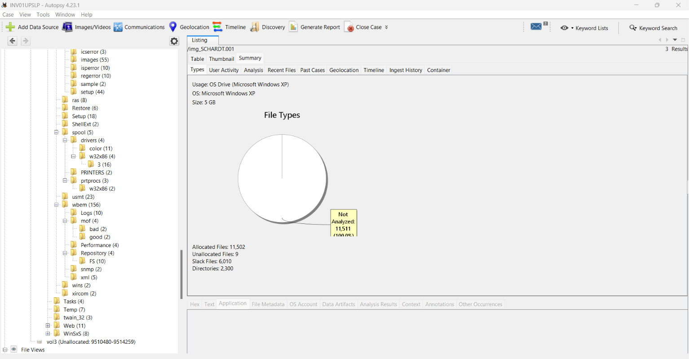
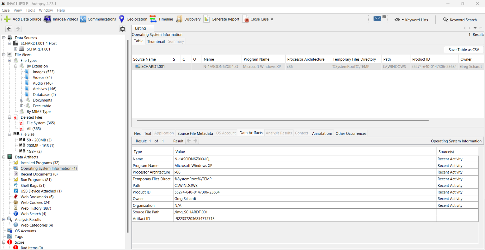
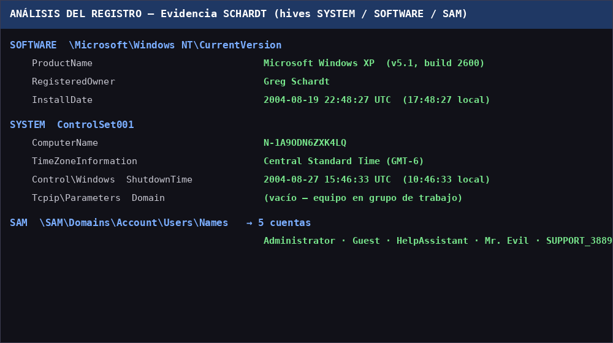
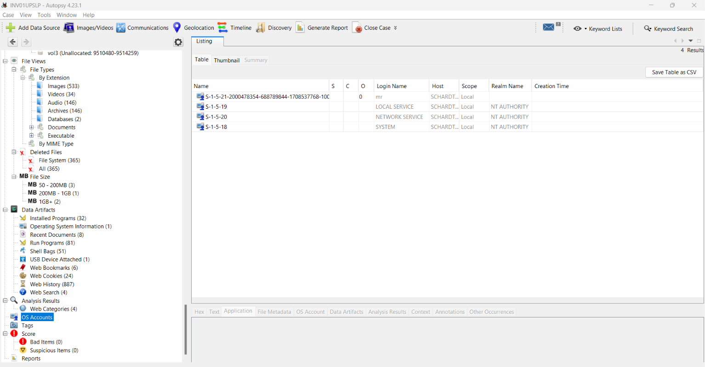
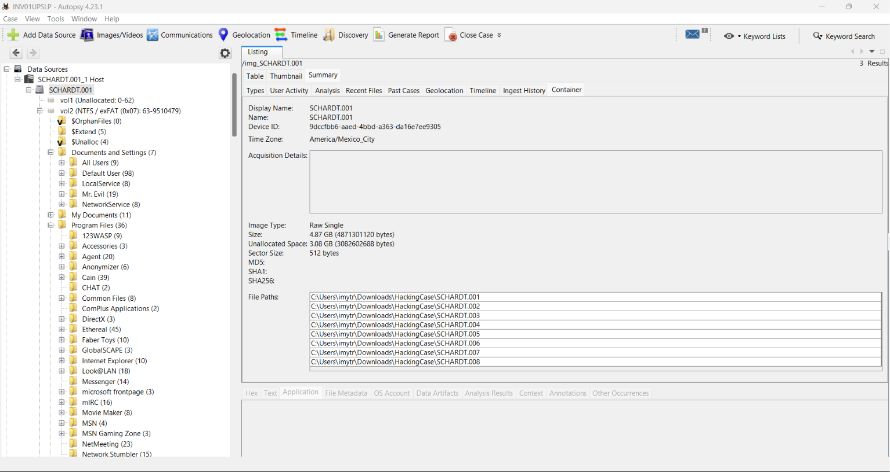
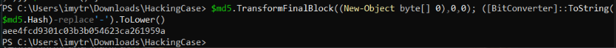

Actividad 18 — La investigación forense: la huella digital de un cibercriminal
CNO IV — Programación WAP
Alumna: Tristán Rivera Magdalena Yesenia — 174702 | Grupo: T37A
Docente: Mtro. Servando López Contreras | Parcial: 3
Fecha: 13 de noviembre de 2026 | Caso: NIST Hacking Case (Greg Schardt / "Mr. Evil")
01 — El caso
Se analizó con Autopsy la imagen forense de una laptop Dell CPi abandonada, presuntamente usada para interceptar tráfico en hotspots y robar tarjetas de crédito. El objetivo: vincular el equipo con el sospechoso Greg Schardt, alias «Mr. Evil». Se configuró el caso, se importó la imagen (8 segmentos) con todos los módulos de ingesta y se extrajo la información del sistema y del registro de Windows.
02 — Hallazgos
| # | DATO | RESULTADO |
|---|---|---|
| 64 | Hash MD5 de la imagen | aee4fcd9301c03b3b054623ca261959a (coincide con el de referencia ✓) |
| 65 | Sistema operativo | Microsoft Windows XP (v5.1, build 2600) |
| 66 | Fecha de instalación | 19/08/2004 22:48:27 UTC |
| 67 | Zona horaria | Central Standard Time (GMT-6) |
| 68 | Propietario registrado | Greg Schardt |
| 69 | Nombre del equipo | N-1A9ODN6ZXK4LQ |
| 70 | Dominio principal | Sin dominio (grupo de trabajo) |
| 71 | Último apagado | 27/08/2004 15:46:33 UTC |
| 72 | Cuentas registradas | 5 — Administrator, Guest, HelpAssistant, Mr. Evil, SUPPORT_388945a0 |
03 — Evidencia






04 — Conclusión
// REFLEXIÓN TÉCNICA
El análisis con Autopsy permitió vincular el equipo con el sospechoso: el propietario registrado es Greg Schardt y existe una cuenta con su alias «Mr. Evil». La integridad de la evidencia quedó probada con el hash MD5, que coincide con el de referencia del caso. El registro de Windows aportó la línea de tiempo (instalación, zona horaria, último apagado) y la configuración del equipo.
El uso de una imagen forense (copia bit a bit) y la verificación por hash garantizan la cadena de custodia y el valor legal del análisis: se trabaja siempre sobre la copia, nunca sobre el original.